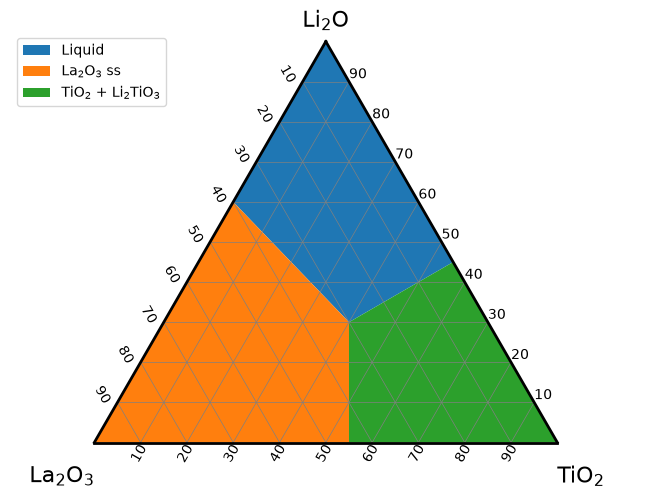
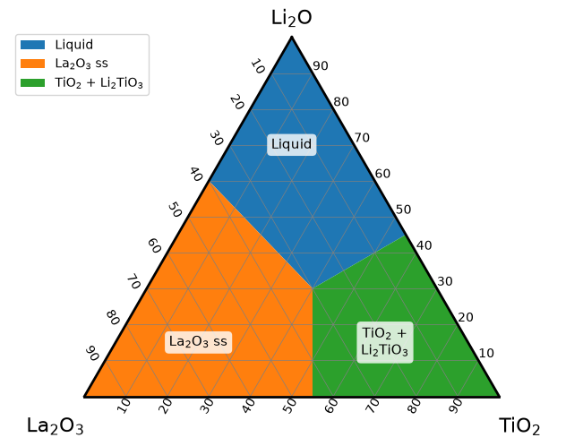
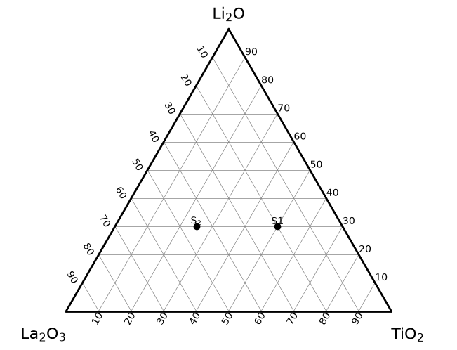
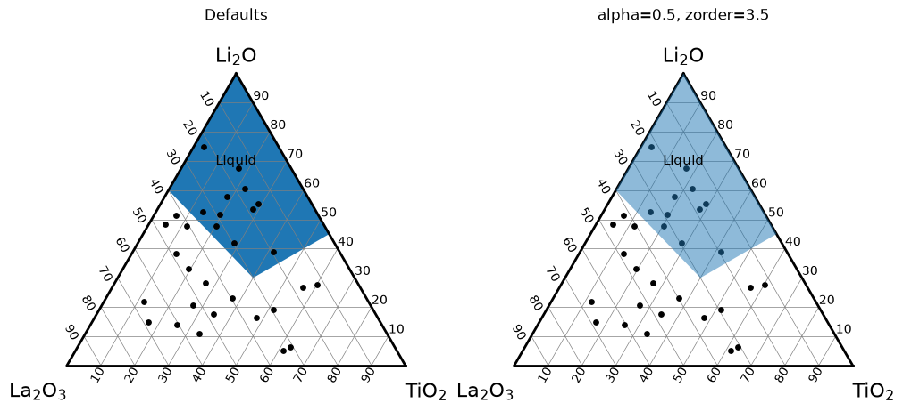
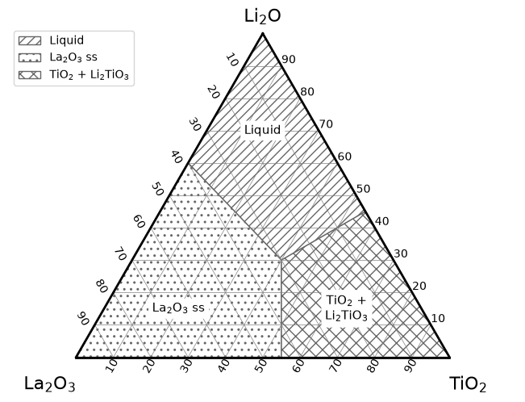

Drawing phase diagrams#
This page shows how to shade phase regions given by their vertex compositions, label them with text placed exactly at a composition, and control how the regions overlap with the grid and the other plots.
The phase diagram on this page is made up for illustration. Its vertices are real compounds, but the regions, their boundaries and the phase names are fictitious and are not the measured phase diagram of the Li2O–La2O3–TiO2 system.
import matplotlib.pyplot as plt
import numpy as np
from ternary_diagram import TernaryDiagram
from ternary_diagram.utils import to_latex_notation
Filling phase regions#
fill() fills a polygon whose vertices are given as compositions, one row per vertex, in the same order of the components as the materials.
As for the other methods, the rows do not have to sum to 1.
Pass label to show the region in the legend, and call td.ax.legend() after drawing the regions.
regions = {
"Liquid": [[1, 0, 0], [0.6, 0.4, 0], [0.3, 0.3, 0.4], [0.45, 0, 0.55]],
"La2O3 ss": [[0, 1, 0], [0, 0.45, 0.55], [0.3, 0.3, 0.4], [0.6, 0.4, 0]],
"TiO2 + Li2TiO3": [
[0, 0, 1],
[0.45, 0, 0.55],
[0.3, 0.3, 0.4],
[0, 0.45, 0.55],
],
}
fig, ax = plt.subplots(layout="constrained")
td = TernaryDiagram(["Li2O", "La2O3", "TiO2"], ax=ax)
for name, vertices in regions.items():
polygons = td.fill(vertices, label=to_latex_notation(name))
legend = td.ax.legend(loc="upper left")

fill returns a list of one matplotlib.patches.Polygon, as Axes.fill does, and passes its keyword arguments, such as facecolor, edgecolor, alpha or hatch, to matplotlib.
Without a color, each call takes the next color of matplotlib’s color cycle, so the regions get different colors.
A polygon needs at least 3 vertices; fewer raise a ValueError.
The legend shows the labels as they are given.
Here to_latex_notation() writes the numbers of the chemical formulas in the labels as subscripts, like the vertex labels: "La2O3 ss" becomes "La$_{2}$O$_{3}$ ss".
Vertex order#
fill joins the vertices in the order given and closes the polygon from the last vertex back to the first.
It does not sort the vertices or compute their convex hull, so give them in order along the boundary of the region, clockwise or counterclockwise.
In the next figure, the same four vertices, marked with black points, are given in two orders, and the number next to each vertex shows its position in the list passed to fill.
On the right, the second and the third vertices trade places, and following the numbers makes the boundary cross itself.
vertices = regions["Liquid"]
orders = {
"In order along the boundary": [0, 1, 2, 3],
"Second and third swapped": [0, 2, 1, 3],
}
# put each number a little inside the region, next to its vertex
center = np.mean(vertices, axis=0)
number_positions = [0.75 * np.array(v) + 0.25 * center for v in vertices]
fig, axes = plt.subplots(1, 2, figsize=(10, 4.5), layout="constrained")
for ax, (title, order) in zip(axes, orders.items()):
td = TernaryDiagram(["Li2O", "La2O3", "TiO2"], ax=ax)
polygons = td.fill([vertices[i] for i in order], alpha=0.6)
points = td.scatter(vertices, color="black", s=15)
for number, i in enumerate(order, start=1):
label = td.text(str(number), number_positions[i], fontweight="bold")
ax_title = ax.set_title(title, pad=24)
![Two ternary diagrams of Li2O, La2O3 and TiO2 side by side, each with a translucent blue region drawn from the same four vertices, marked with black points, and a number from 1 to 4 next to each vertex for its position in the given order. Vertex 1 is the Li2O vertex and vertex 4 is on the right edge in both diagrams. On the left, titled In order along the boundary, vertex 2 is on the left edge and vertex 3 is inside the triangle, and joining 1, 2, 3 and 4 gives a four-sided region near the Li2O vertex. On the right, titled Second and third swapped, vertices 2 and 3 trade places, so vertex 2 is inside the triangle and vertex 3 is on the left edge, and joining 1, 2, 3 and 4 makes the boundary cross itself into two triangles that touch at one point.](../_images/90d9b190faf2c082bc72235772aa9ba98153f0575dd6b156f1193672b6014142.png)
Labeling regions#
text() places a text so that its center is exactly at a composition, which makes it easy to put the name of a phase inside its region.
The keyword arguments are properties of matplotlib.text.Text, such as fontsize or color, and ha / va change the alignment.
text formats the chemical formulas in the text with the same rule as to_latex_notation(): only the words separated by white space that look like chemical formulas get subscripts, and a text that contains $ (matplotlib’s math text) is shown as it is.
Here each region is labeled with the same name as its legend entry, a line break keeps the longest name inside its region, and a white box behind each label keeps it readable over the colors.
label_positions = {
"Liquid": [0.7, 0.15, 0.15],
"La2O3 ss": [0.15, 0.65, 0.2],
"TiO2 + Li2TiO3": [0.15, 0.2, 0.65],
}
fig, ax = plt.subplots(layout="constrained")
td = TernaryDiagram(["Li2O", "La2O3", "TiO2"], ax=ax)
labels = {}
for name, vertices in regions.items():
polygons = td.fill(vertices, label=to_latex_notation(name))
text = name.replace(" + ", " +\n")
labels[name] = td.text(
text,
label_positions[name],
fontsize=11,
bbox={"boxstyle": "round", "fc": "white", "ec": "none", "alpha": 0.8},
)
legend = td.ax.legend(loc="upper left")

The texts of the labels show the formatting; "Liquid" and "ss" do not look like chemical formulas and stay as they are, and the line break is kept:
for label in labels.values():
print(repr(label.get_text()))
'Liquid'
'La$_{2}$O$_{3}$ ss'
'TiO$_{2}$ +\nLi$_{2}$TiO$_{3}$'
auto_latex_notation of text decides whether the formulas are formatted.
With None (the default), text follows auto_latex_notation of TernaryDiagram, the setting chosen when the diagram was created (True unless changed, the same setting as the vertex labels).
Pass auto_latex_notation=False to show a text as it is in one call, for example a sample name such as "S1", which looks like a formula of sulfur.
True formats the text of one call on a diagram created with auto_latex_notation=False.
samples = [[0.3, 0.45, 0.25], [0.3, 0.2, 0.5]]
fig, ax = plt.subplots(layout="constrained")
td = TernaryDiagram(["Li2O", "La2O3", "TiO2"], ax=ax)
points = td.scatter(samples, color="black")
formatted = td.text("S2", samples[0], va="bottom")
as_typed = td.text("S1", samples[1], va="bottom", auto_latex_notation=False)
print(formatted.get_text(), as_typed.get_text())
S$_{2}$ S1

va="bottom" puts the bottom of each text at its composition, just above the point, instead of the center.
For the formatting of the vertex labels and of annotate(), see Chemical formula labels in Getting started.
Layering and transparency#
Each method draws with a default zorder, so the layers stay in the same order whatever order you call the methods in.
A larger zorder is drawn in front; artists with the same zorder are drawn in the order they were added.
Layer |
Drawn by |
Default |
|---|---|---|
Heatmaps |
-1 |
|
Contour maps |
0 |
|
Phase regions |
0.5 |
|
Grid and border |
the diagram ( |
1 |
Lines, such as tie lines |
2 |
|
Points |
3 |
|
Annotations, tick labels, axis titles and vertex labels |
|
3 (matplotlib’s default for texts) |
Texts |
4 |
So by default a phase region covers a contour map but stays behind the grid, the tie lines, the points and the labels.
A region is opaque by default and hides what is behind it.
Pass alpha to make it translucent and zorder to move it to another layer.
In the next figure, the left diagram uses the defaults: the grid and the points are drawn over the region.
On the right, zorder=3.5 moves the region in front of the grid and the points, and alpha=0.5 keeps them visible through it; the text, with zorder 4, stays in front of the region.
rng = np.random.default_rng(0)
measured = rng.dirichlet([2, 2, 2], size=30)
styles = {
"Defaults": {},
"alpha=0.5, zorder=3.5": {"alpha": 0.5, "zorder": 3.5},
}
fig, axes = plt.subplots(1, 2, figsize=(10, 4.5), layout="constrained")
for ax, (title, style) in zip(axes, styles.items()):
td = TernaryDiagram(["Li2O", "La2O3", "TiO2"], ax=ax)
polygons = td.fill(regions["Liquid"], **style)
points = td.scatter(measured, color="black", s=15)
label = td.text("Liquid", label_positions["Liquid"], fontsize=11)
ax_title = ax.set_title(title, pad=24)

Regions are drawn over a contour map by default; give them an alpha so that the contours show through.
A zorder below 0, such as zorder=-0.5, puts a region behind the contours, which helps only with contour lines (contour(..., fill=False)) or translucent filled contours, because opaque filled contours hide the region.
Not by color alone#
Colors alone do not tell the regions apart for every reader: some readers do not see the difference between some colors, and the colors are lost when the figure is printed in grayscale. The diagram in Labeling regions therefore names each region twice, in the legend and with a text label inside the region, so it can be read without the colors.
Hatching gives each region a pattern in addition, and works even without colors.
hatch is a property of the polygon; the patterns are drawn in the edgecolor.
hatches = {"Liquid": "///", "La2O3 ss": "..", "TiO2 + Li2TiO3": "xx"}
fig, ax = plt.subplots(layout="constrained")
td = TernaryDiagram(["Li2O", "La2O3", "TiO2"], ax=ax)
for name, vertices in regions.items():
polygons = td.fill(
vertices,
label=to_latex_notation(name),
facecolor="white",
edgecolor="0.4",
hatch=hatches[name],
)
text = name.replace(" + ", " +\n")
label = td.text(
text,
label_positions[name],
fontsize=11,
bbox={"boxstyle": "round", "fc": "white", "ec": "none"},
)
legend = td.ax.legend(loc="upper left")

The white box behind each text label keeps it readable over the pattern.
contour(fill=...) vs fill()#
Note
The fill argument of contour() and the fill() method are unrelated.
contour(vector, z, fill=True) (the default) fills the areas between the contour levels of values z interpolated between compositions, and fill=False draws only the contour lines.
fill(vector) fills one polygon whose vertices are the compositions in vector, with no values and no interpolation.
Use fill() for phase regions and contour for maps of a value; see Heatmaps and contour maps.
See also#
Getting started explains how to pass compositions and how the chemical formulas of the labels are formatted.
Customizing the diagram explains how to change the grid, the border and the labels that the regions are drawn with.
Heatmaps and contour maps explains how to draw values that vary with the composition.